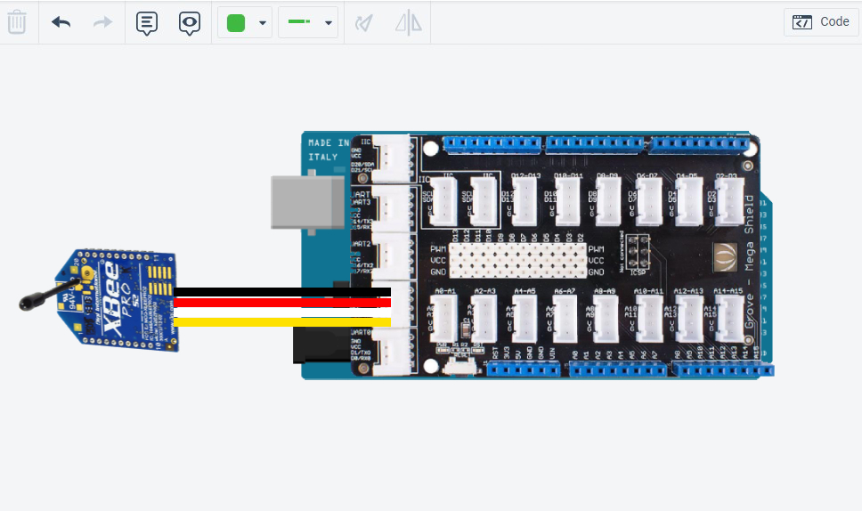
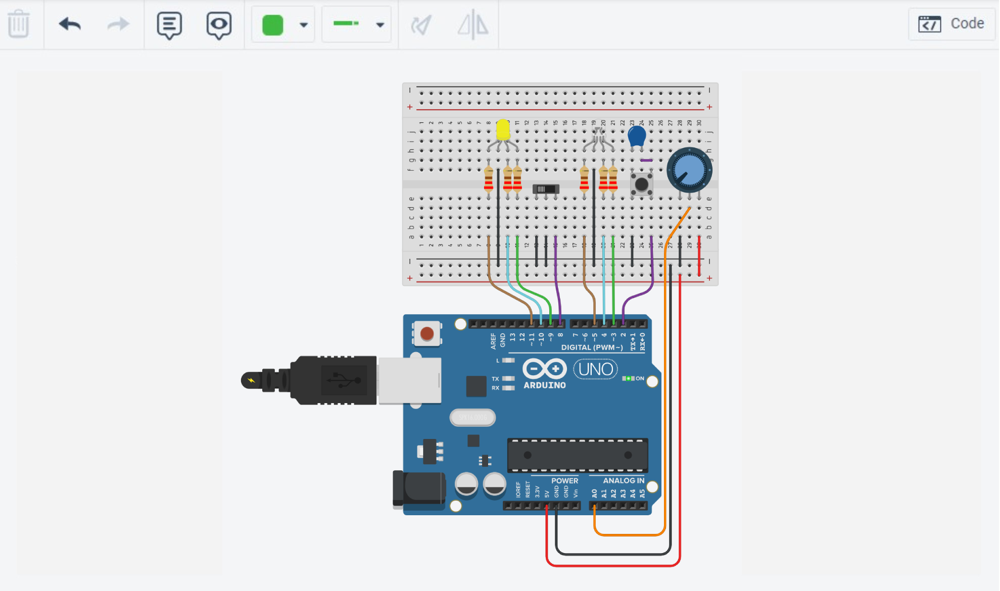
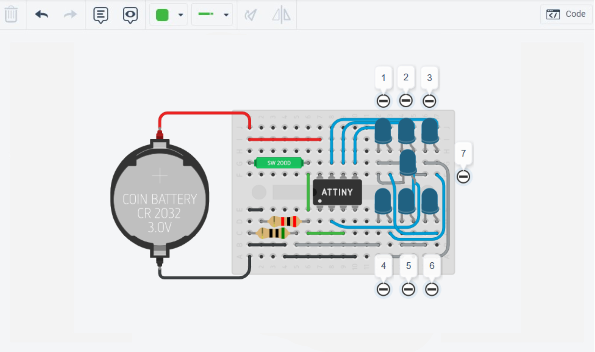
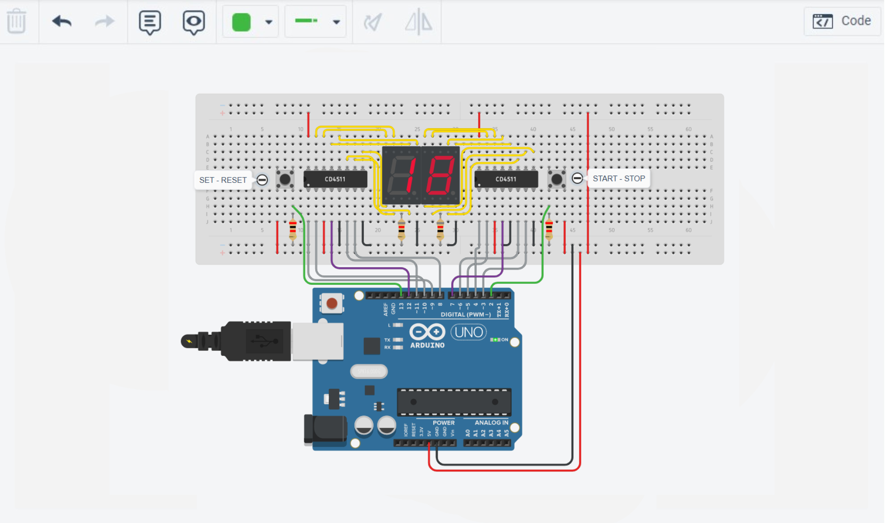

Jules Ferry projects
Actually those aren't projects but works that was given by the professor (real projects are for next year).

Arduino Chaser
For the chaser, first we had to make the chaser work like a normal one, the lights on and off one after another. We also had to make different mods for this chaser.
//CTP22_ex4v1
//Faire un chenilliard marche-arrêt :
const int firstLEDpin = 2;
const int lastLEDpin = 9;
const int buttonPin = 12;
const int chaseDuration = 100;
const int LEFT = +1;
const int RIGHT = -1;
int chaseDirection = LEFT;
bool previousButtonLevel = LOW;
bool currentButtonLevel = LOW;
bool isChasing = true;
void setup()
{
for(int ledPin = firstLEDpin; ledPin <= lastLEDpin; ledPin++){
pinMode(ledPin, OUTPUT);
digitalWrite(ledPin, LOW);
pinMode(buttonPin, INPUT_PULLUP);
}
}
int ledPin = firstLEDpin;
unsigned long previousMillis = millis();
void loop()
{
previousButtonLevel = currentButtonLevel;
currentButtonLevel = digitalRead(buttonPin);
if (currentButtonLevel == LOW && previousButtonLevel == HIGH) { // Front descendant
isChasing = !isChasing;
}
if (isChasing) {
if (millis() - previousMillis >= chaseDuration){
previousMillis += chaseDuration;
digitalWrite(ledPin, LOW);
ledPin += chaseDirection;
digitalWrite(ledPin, HIGH);
}
if (chaseDirection == LEFT && ledPin == lastLEDpin ||
chaseDirection == RIGHT && ledPin == firstLEDpin) {
chaseDirection = -chaseDirection;
}
}
else {
previousMillis = millis();
}
delay(10);
}
Download code

Arduino Barograph
For the Barograph also we had two code, one that on the lights with the potentiometer, and the other one with bits.
// Déclarer les constantes global
const uint8_t firstLEDpin = 2;
const uint8_t lastLEDpin = 9;
const uint8_t numberOfLED = 8;
const uint8_t potentiometerPin = A0;
int potentiometreValue;
int numberOfLitLED;
void setup(){
for(int ledPin = firstLEDpin; ledPin <= lastLEDpin; ledPin++){
pinMode(ledPin, OUTPUT);
digitalWrite(ledPin, LOW);
}
Serial.begin(9600);
pinMode(potentiometerPin, INPUT);
}
int ledPin = firstLEDpin;
void loop(){
potentiometreValue = analogRead(potentiometerPin);
numberOfLitLED = map(potentiometreValue, 1, 1023, 0, numberOfLED );
Serial.println(potentiometreValue);
for(int ledPin = firstLEDpin; ledPin <= numberOfLitLED + firstLEDpin - 1; ledPin++){
digitalWrite(ledPin, HIGH);
}
for(int ledPin = lastLEDpin; ledPin >= numberOfLitLED + firstLEDpin; ledPin--){
digitalWrite(ledPin, LOW);
}
delay(10);
}
Download code

Arduino Zigbee
Here we used a little zigbee card to communicate between arduino's card, at first it send automatically the first letter of our name, after we did a code that allow us to communicate with the arduino monitor series.
// Communication Zigbee
void setup()
{
//Initialisation de la liaison série UART0 à 9600 bauds
Serial.begin(9600, SERIAL_8N1);
//Initialisation de la liaison série UART1 à 9600 bauds
Serial1.begin(9600, SERIAL_8N1);
Serial.println("Test zigbee");
}
int incomingByte = 0;
int tableau [100];
int i = 0;
void loop()
{
// Cette partie, c'est pour pouvoir écrire sur notre moniteur série
if (Serial.available() > 0) {
incomingByte = Serial.read();
Serial.write(incomingByte);
if (incomingByte != '\r') {
tableau[i] = incomingByte;
i++;
}
if (incomingByte == '\r') {
for(int y = 0; y < i; y++) {
int valeur = tableau[y];
Serial1.write(valeur);
}
Serial1.println();
i = 0;
}
}
// Ici c'est la partie réception
if (Serial1.available() > 0) {
incomingByte = Serial1.read();
Serial.write(incomingByte);
}
}
Download code

Arduino RGB LED
For the RGB led's, first we got a switch that help use to use 2 mods (manuel and auto), a button for switching color's and a potentiometer for the intensité of the color. the code down here is for the automatically mod for the RGB light. (more info in the video)
// LED fixe
const int steadyLEDgreenPin = 3;
const int steadyLEDbluePin = 4;
const int steadyLEDredPin = 5;
// LED variable
const int varLEDgreenPin = 9;
const int varLEDbluePin = 10;
const int varLEDredPin = 11;
// Pour les entrées utilisées
const int buttonPin = 2;
const int switchPin = 8;
const int potentiometerPin = A0;
void setup()
{
// Initialisation des LEDs fixe
for (int ledPin = steadyLEDgreenPin; ledPin <= steadyLEDredPin; ledPin++){
pinMode(ledPin, OUTPUT);
digitalWrite(ledPin, LOW);
}
// Initialisation des LEDs variable
for (int varLEDpin = varLEDgreenPin; varLEDpin <= varLEDredPin; varLEDpin++){
pinMode(varLEDpin, OUTPUT);
digitalWrite(varLEDpin, LOW);
}
// Initialisation des entrées
pinMode(buttonPin, INPUT_PULLUP);
pinMode(switchPin, INPUT);
pinMode(potentiometerPin, INPUT);
}
// Define an enumeration of Color values with int8_t
enum Color : int8_t {RED, YELLOW, GREEN, CYAN, BLUE, MANGENTA};
enum Color steadyLEDcolor = RED;
// Define another enumeration of ColorTransition values with int8_t
enum ColorTransition : int8_t {TO_YELLOW, TO_GREEN, TO_CYAN, TO_BLUE, TO_MAGENTA, TO_RED};
enum ColorTransition colorTransition = TO_YELLOW;
uint8_t redValue = 255;
uint8_t greenValue = 0;
uint8_t blueValue = 0;
void loop()
{
switch (colorTransition) {
case TO_YELLOW:
if (greenValue == 255) {
colorTransition = TO_GREEN;
}
else {
greenValue++;
delay(10);
}
break;
case TO_GREEN:
if (redValue == 0) {
colorTransition = TO_CYAN;
}
else {
redValue--;
delay(10);
}
break;
case TO_CYAN:
if (blueValue == 255){
colorTransition = TO_BLUE;
}
else {
blueValue++;
delay(10);
}
break;
case TO_BLUE:
if (greenValue == 0){
colorTransition = TO_MAGENTA;
}
else {
greenValue--;
delay(10);
}
break;
case TO_MAGENTA:
if (redValue == 255){
colorTransition = TO_RED;
}
else {
redValue++;
delay(10);
}
break;
case TO_RED:
if (blueValue == 0){
colorTransition = TO_YELLOW;
}
else {
blueValue--;
delay(10);
}
}
analogWrite(varLEDredPin, redValue);
analogWrite(varLEDgreenPin, greenValue);
analogWrite(varLEDbluePin, blueValue);
}
Download code

Arduino Electronic dice
The electronic dice was a bit harder to code than other projects, after completing the project, it was easier to understand. It one of my favorite because I liked the the way that we used a lot of function, and learning how to link the between each other was great.
// Définir des pseudo-constantes pour les broches correspondantes aux LEDs
#define LED_16_PIN 0
#define LED_25_PIN 1
#define LED_34_PIN 2
#define LED_7_PIN 3
// Définir une pseudo-constante pour la broche du capteur
#define SENSOR 4
#define notConnectedPin 5 // Broche non-utilisée
void setup()
{
initPins();
initRandomSerie();
}
void loop()
{
if (isSequenceTriggered()){
for(int steps = 1; steps <= 10; steps++){ // Boucle pour montrer plusieurs fois le résultat du dé
displayDiceFace(transcodeNumber(generateNewFaceNumber())); // Affiché la face du dé
delay(250);
}
}
delay(10);
}
void initPins() // fonction qui initialise les broches pour chaque LED et le capteur
{
for(int leds = LED_16_PIN; leds <= LED_7_PIN; leds++){
pinMode(leds, OUTPUT);
digitalWrite(leds, LOW);
}
pinMode(SENSOR, INPUT);
}
void displayDiceFace(byte ledState) // Fonction pour afficher la face d'un dé
{
for(int ledPin = LED_16_PIN; ledPin <= LED_7_PIN; ledPin++){
digitalWrite(ledPin, bitRead(ledState, ledPin)); // Déterminer si une LED doit être allumée ou non
}
}
// Fonction pour transformer un nombre en LED activées / désactivées qui correspond à la face d'un dé
byte transcodeNumber(int number)
{
switch(number) { // Crée une séquence d'instruction basée sur la valeur du paramètre 'number'
case 1:
return 0b1000;
case 2:
return 0b0001;
case 3:
return 0b1001;
case 4:
return 0b0101;
case 5:
return 0b1101;
case 6:
return 0b0111;
default:
return 0b0000;
}
}
void initRandomSerie() // Fonction pour initialiser le générateur de nombres aléatoires
{
randomSeed(analogRead(notConnectedPin));
}
// Fonction qui génère un nombre aléatoire qui ne correspond pas avec la précédent pour éviter la triche
int generateNewFaceNumber()
{
static int previousDisplayedNumber = 0;
int newNumber;
do {
newNumber = random(1,7);
}
// On boucle tant que ces deux conditions sont remplies
while(((newNumber == previousDisplayedNumber) || (newNumber + previousDisplayedNumber == 7)));
return newNumber;
}
bool isSequenceTriggered() // Fonction pour vérifier si la séquence doit commencer ou non
{
static bool previousSwitchLevel = LOW;
static bool currentSwitchLevel = LOW;
previousSwitchLevel = currentSwitchLevel;
currentSwitchLevel = digitalRead(SENSOR);
return (currentSwitchLevel == HIGH && previousSwitchLevel == LOW);
}
Download code

Arduino CountDown
The most complicated electronic circuit to build, you have to check many time the circuit, in this code to there is a lot of function like the previous one. Two of them are really easy to make, for exemple initPins().
#include
const uint8_t startStopButtonPin = 2;
const uint8_t setResetButtonPin = 13;
const uint8_t firstBCDunitsPin = 3;
const uint8_t lastBCDunitsPin = 6;
const uint8_t firstBCDtensPin = 8;
const uint8_t lastBCDtensPin = 11;
const uint8_t unitsBlankPin = 7;
const uint8_t tensBlankPin = 12;
struct LogicalSignal {
uint8_t pin; // pin number to be declared as INPUT our INPUT_PULLUP
byte levels; // current level on bit rank 0, previous level on bit rank 1
};
#define updateSignal(signal) do {\
signal.levels <<= 1;\
signal.levels = ((digitalRead(signal.pin) | signal.levels) & 0b11);\
} while(0)
#define risingEdge(signal) (signal.levels == 0b01)
struct LogicalSignal startStopButton = {startStopButtonPin, 0b00};
struct LogicalSignal setResetButton = {setResetButtonPin, 0b00};
#define unitsDigit(number) (number % 10)
#define tensDigit(number) (number / 10)
void setup()
{
initPins();
steadyDisplay();
}
void loop()
{
updateSignal(startStopButton);
updateSignal(setResetButton);
static int number = 20;
static bool stopped = false;
if (risingEdge(startStopButton)){
stopped = !stopped;
}
if (risingEdge(setResetButton)){
if (number == 0) {
number == 20;
stopped = false;
}
}
if (!stopped && clockSecondTick()){
if (number > 0) {
number--;
}
}
displayNumber(number);
}
void initPins()
{
for(int units = firstBCDunitsPin; units <= lastBCDunitsPin; units++)
{
pinMode(units, OUTPUT);
digitalWrite(units, LOW);
}
for(int tens = firstBCDtensPin; tens <= lastBCDtensPin; tens++)
{
pinMode(tens, OUTPUT);
digitalWrite(tens, LOW);
}
pinMode(startStopButtonPin, INPUT);
pinMode(setResetButtonPin, INPUT);
pinMode(unitsBlankPin, OUTPUT);
pinMode(tensBlankPin, OUTPUT);
}
void steadyDisplay()
{
digitalWrite(unitsBlankPin, HIGH);
digitalWrite(tensBlankPin, HIGH);
}
void displayDigit(int digit, int BCDinputFirstPin)
{
for(int pin = BCDinputFirstPin; pin <= BCDinputFirstPin + 3; pin++)
{
digitalWrite(pin, bitRead(digit, pin - BCDinputFirstPin));
}
}
void displayNumber(int number)
{
int units = unitsDigit(number);
int tens = tensDigit(number);
displayDigit(units, firstBCDunitsPin);
displayDigit(tens, firstBCDtensPin);
}
bool clockSecondTick()
{
static unsigned long previousMillis = millis();
if (millis() - previousMillis >= 1000)
{
previousMillis += 1000;
return true;
}
return false;
}
Download code